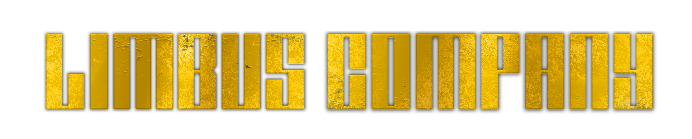
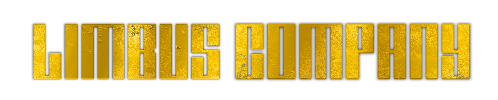
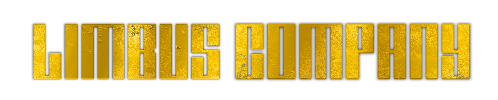
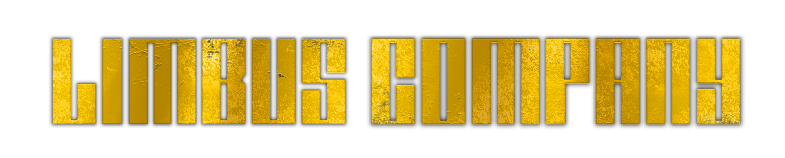

Pecador Número 2:Faust
A pecadora que desenvolveu o motor do Mefistófeles, o onibus da empresa Limbus. Ela afirma que não há ninguém na cidade que possa rivalizar com a sua biblioteca de conhecimento e sabedoria, e não está necessariamente errada. A sua atitude arrogante quando permite que falemos com ela pode desagradar, mas como ela trata todos com gestos subtis de arrogância, não há esperança de que ela se desfaça disso, nunca. Recomendamos que simplesmente acene com a cabeça uma vez e ultrapasse o assunto. Apesar de ter um génio inigualável, não conseguimos perceber como usar este. Talvez você possa descobrir?
Faust é baseaada no livro "Goethe's Faust" ou "O Fausto de Goethe" em português, uma semelhança é a sua conexão com Mefistófeles, no livro, Faust troca sua alma por conhecimento ilimitado, e Mefistófeles é o demônio que faz a troca, já em Limbus Company, Mefistófeles é o onibus construido por Faust, que leva ela e os outros pecadores ao inferno.
A principal arma de Faust em combate é seu zweihander, "WALPURGISNACHT", semelhante a Yi Sang, Faust não é a melhor em combate, ajundando mais o grupo através de seu grande conhecimento.